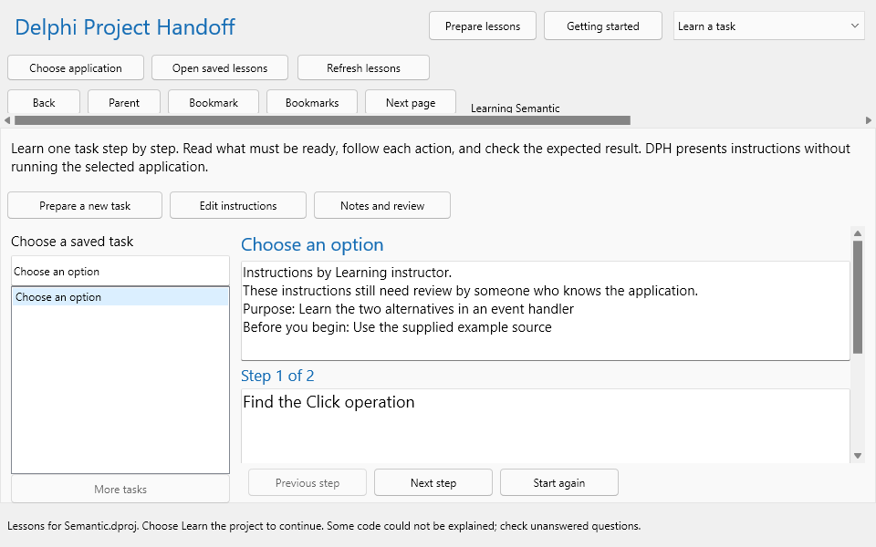
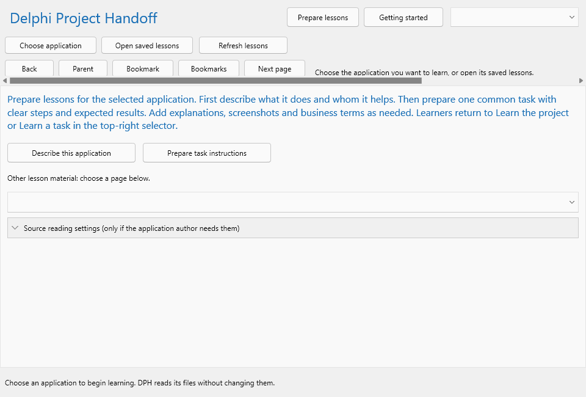

Learn an unfamiliar application one task at a time.
Delphi Project Handoff (DPH) helps you learn an unfamiliar Delphi application. You choose that application, read its purpose, follow its screens and actions, and study instructions supplied by someone who knows it. You can then investigate how a particular action reaches the code that performs the work.
This guide is for the learner and the person preparing lessons. Begin with one common task. You do not need to understand every source file or compiler setting before you start.
The top-right selector chooses a learning page. Prepare lessons is a separate button for adding introductions, tasks, answers and images. The bottom status line tells you what DPH is doing.
DPH reads supplied source and form files without changing or running the selected application. These files reveal many connections, but they do not contain every business reason or operating procedure. Named contributions supply that knowledge. When an explanation is unavailable, DPH leaves a question to answer.
Obtain the application source from the person responsible for it. Ask for its Delphi project file and associated source and form files. An executable by itself does not provide the same lessons.
One database belongs to one selected application or project group. Open a different database to learn another application. A rejected project selection leaves the current workspace available.
If some code could not be explained, ask the author whether all required files were supplied. Prepare lessons contains collapsed source reading settings for that person. Leave them alone unless the author tells you which settings the application requires.
A missing purpose explanation means someone still needs to supply it. Ask the author for the intended user, the task, an example input and the expected result. A plausible control name does not establish its purpose.
How it starts introduces initialization. Follow an action connects screen events to operations. Decisions and loops explains choices and repetition. Inputs and results follows information, while How the parts fit introduces units. Each topic includes an exercise to check your understanding.
Questions and answers presents saved replies and questions still to ask. Delphi terms explains programming words in ordinary language. Business glossary, in the top-right selector, contains terms particular to the selected application.
Explain one action in your own words: what starts it, what information it uses, what decision changes its path, and what result the user should check. Return to Start here when you need another route through the material.
An object with no supported next connection may still do useful work. Ask the author or inspect the related source with someone who understands it.
Optional: read the code walkthrough and source details expands the supporting source explanation, trace and diagram. Keep it closed while learning the user task. An uncertain connection needs checking; a diagram describes possible paths rather than a recording of a successful run.
The left object list finds names directly. Double-click an object to open its explanation. The labeled Selection details pane identifies the selection when visible. Drag the dividers to resize the panes. In a restored window, scroll the command strip if a button is outside the visible width.

DPH displays instructions; it does not perform the task in the selected application. If practice requires running that application, use the environment and example data approved by its owner. Instructions should identify what is safe to try and what result to expect.
If the list is empty, ask the preparer to add a common task. Older free-text instructions remain readable, but DPH does not invent steps for them. Instructions awaiting review remain visibly attributed to their contributor.
Form designs reconstruct controls from the saved layout. They help identify names and connections, but styles, custom controls and runtime changes can make the running screen look different. Screenshots contains separately supplied images. Read the contributor and caption before treating an image as the current screen.
Choose Business glossary and search for a term used in the task. Read its definition, aliases and application context. A definition awaiting review still needs checking. Use Delphi terms in Learn the project for words such as form, event, procedure and unit.
The preparer can choose Screenshots, enter a named contributor and a caption describing the context, and click Import PNG to select an existing PNG. Select the relevant object first if the image should be associated with it. DPH copies the image into managed storage; it does not automatically launch or capture the selected application.

Keep one action and one observable result in each step. Explain what to do when the result differs. A saved task retains its name; create a new task when you need a different identity.
Choose Action purposes in the preparation selector, select an action and open its editor. Supply the user purpose and instructions, click Apply explanation draft, then Save in Saved explanations. For a term, choose Business glossary, New term, complete its definition and context, then Apply to Knowledge draft and Save.
In Saved explanations, click New. Enter a descriptive title, named author and explanation. Choose a suitable kind, such as user_help or troubleshooting, then Save. Selecting a saved explanation displays its content for editing. Saving an edit creates a new revision and preserves the previous one.
Saving does not mean someone checked the explanation. A knowledgeable reviewer should compare it with source or an approved example, select the saved record, enter their own name and choose Verify review. Current-source verification needs attached, current source. Rejected or retired records remain in history and are not presented as current task lessons.
Source changes can make an explanation need review again. Refreshing source cannot confirm business knowledge. If DPH asks you to save or discard a draft before switching, finish that draft or discard it explicitly.
The edition is read-only. Change explanations in DPH, then create a new edition. Optional publication settings narrow the audience or scope. Read the resulting material before sharing it, particularly when the application contains sensitive information.
The .dphdb file contains the lessons and authored knowledge. Keep its adjacent .dphdb.views folder because it can hold managed images and other material. Close DPH before copying these files to a safe location. An exported edition is useful for reading but does not replace the editable store.
The DPH package includes this User Guide as an editable document and a PDF. A learning edition also contains guides about the selected application. Its linked HTML provides the most direct route through objects and images. Build and optional PDF conversion instructions are in the Engineering Guide.
No task supplied means someone has not prepared instructions. No purpose supplied means the introduction or action needs an answer. Some code could not be explained means DPH could not establish all relevant source connections. Ask the preparer to check missing files and source settings, and record the unresolved question.
If Choose application rejects the selection, check that you chose the intended project rather than DPH itself. If saved lessons will not open, check the filename, access permissions and adjacent material. Preserve the last readable copy while the preparer investigates.
If an embedded page is unavailable, use its native text explanation where provided. Open an exported edition independently through learning.html. The preparer can check Microsoft WebView2 Runtime and the supplied loader. If an export destination exists, choose a new folder name.
You have learned this route when you can explain the task and its outcome without merely repeating control names. Take the remaining question to someone who knows the application, save the answer and revisit the lesson.
Optional translation requires an internet connection. Product names and code names retain their original spelling.